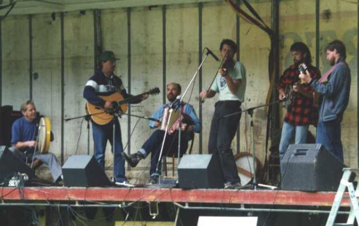
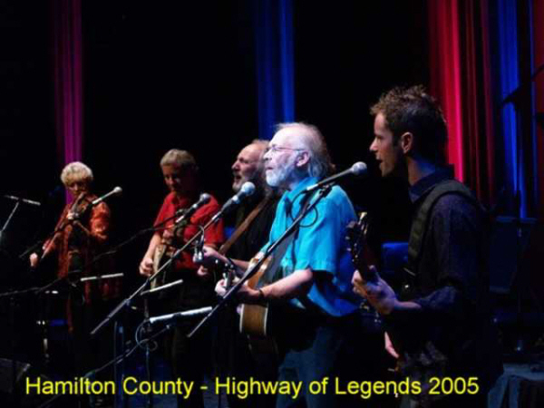
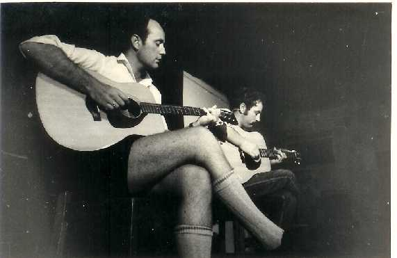
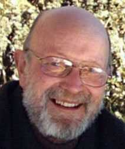
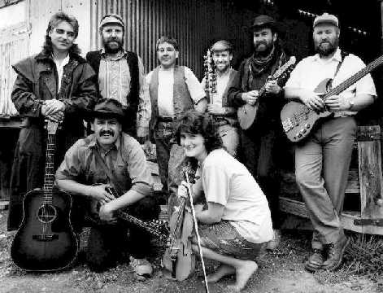

HOME
ARTISTS
CLUBS
FESTIVALS
INSTRUMENTS
LINKS
NZ TOURS
PHOTOS
RESOURCES
SESSIONS
TUNES
UPDATES

Photographs
Most of these photos are of historical interest to members of the NZ folk community. If you'd like to add a photo here, or if you have more information about any of these pictures, please email me (mikem(at)earthlight.co.nz).

A bush band on the back of a truck some time in the late 80's at Whare Flat Folk Festival.
Mike Ryan, Tony Hale, Peter Walton, Bernd Unstaedt, Ulf Schmidt, Steve McGlone

Hamilton County Bluegrass, appearing in the "Highway of Legends" concert tour, 2005

Dave Jordan (L) and Dave Calder (R) at the first National Banjo-Pickers' Convention,
Te Rapa, Easter 1967.

Dave Jordan 2002

The Pioneer Pog'n'Scroggin Band, 1990, Whitecliffs. Back: Matt Ryan, John Steel, Ian Paterson, Bruce Cull, Mike Moroney, Richard Loughrey. Front: Mark Laws, Katherine West.